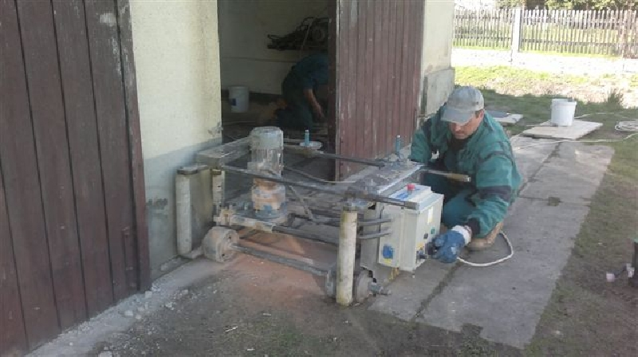

Podřezávání a izolace vlhkého zdiva
Bydlíte nebo jste si právě pořídili bydlení ve starším domě a trápí vás nepříjemná vlhkost objektu? Jak zajisté víte, vlhkost podporuje vznik plísní, které mohou vést k řadě zdravotních problémů. Ideální možností jak se jí zbavit jednou provždy je podřezávání a izolace zdiva.
Podřezávání zdiva se provádí dodatečně u stěn staveb s nežádoucí vzlínající vlhkostí. Používáme moderní odborné technologické postupy, které vám garantují nenarušení statiky stavby. Obraťte se na nás a bydlete moderně a komfortně!
Nabízíme vypracování cenové nabídky a poradenství zcela zdarma. Kontaktujte nás!
Použitý špičkový izolační materiál vám zaručí životnost izolace se životností stavby, výrobce těchto materiálů dokonce udává životnost až 100 let! Velkou výhodou podřezávání zdiva je také rychlost, u běžného rodinného domu do 4 dnů.
Tato metoda mechanického izolovaní patří také mezi cenově nejvýhodnější - pokud je tedy tato metoda pro váš objekt vhodná. Je tedy zbytečné zvyšovat náklady použitím nerezových plechů či nasazením diamantového lana. Využijte této skvělé možnosti, která vám zajistí zdravé bydlení.
Garantujeme vám záruku až 10 let na podřezávání a izolaci zdiva!
Jaké jsou podmínky a způsob podřezávání?
Podřezávání provádíme u cihlových stěn s průběžnou spárou a šíři stěny do 100 cm použitím moderního postupu.
- strojní pozdřezávání vlhkého zdiva
- vložení polyetylenové izolační fólie (tl. 2 mm)
- možnost ochrany proti radonu
- vyklínování polypropylenovými klíny
- zahození spáry maltou
- tlakové vyplnění prostoru řezu - injektáž
Využijte našich dlouholetých zkušeností!
Za více než 20 let působení na trhu jsme provedli stovky profesionálních podřezávání a izolací zdiva, díky tomu vám můžeme nabídnout ty nejlepší služby zaměřené na řezání stavebních materiálů. V případě zájmu vám naši odborníci provedou kompletní spodní izolaci stavby (podlah, vč. tepelné).
Zaručujeme vám vysokou kvalitu provedení - používáme materiály od prověřených tuzemských výrobců zaručující dlouhou životnost. Neváhejte se na nás obrátit, provedeme bezplatnou návštěvu a posouzení stavu objektu. Následně vám navrhneme to nejvhodnější řešení podřezávání a izolaci zdiva.
Dohodněte si na tel. 608 900 960 s p. Burešem osobní prohlídku zdarma!
Ke každému zákazníkovi přistupujeme individuálně s maximálním přihlédnutím na jeho přání a představy. Díky tomu máme mnoho spokojených zákazníků, zařaďte se mezi ně i vy! Zvyšte si komfort bydlení a vylepšete esetický vzled budovy za pomoci podřezávání a izolace zdiva.